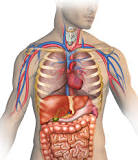

STUDY OF THE ANIMAL BODY
Primarily we know that animal species consists of several parts like skin,teeth,bones etc
Have you ever wondered what exactly happens inside the body of an animal or have you ever thought of the process a body undergoes internally.
Its interesting right!!! so lets know few of interesting topic in this ANATOMY segment.
Without further delay lets enter into the topic!!
ANATOMY
Anatomy is the study of the animal species body and the process they undergo internally.

INTRODUCTION:
It was introduced in the ancient greek times.It was introduced for the purpose of deep study of the animal species.This study helps us in knowing deeply about the living beings present on the earth.This helps us in knowing the regular things like
- Reaction to surroundings
- Food habits
- Body functionality
- Internal reactions or processes etc...
This study has been helping the people to know the in-depth facts about the animal kinds and their habitants. Lets know in depth about the anatomy study
This invovlves the study on regular food intake processes,digestion mechanism,lifespan of animals based on their species,phobias
It is much dependant on the place they live,they born and they migrated.It alos explains the habits of migrations and chaanging of feeding style they adopt depent on the surroundings
In short,anatomy is the key towards learning the earths backbone part-FAUNA
The major types of anatomies are:
- Animal Anatomy
- Human Anatomy
- Plant Anatomy
FOR MORE INTERESTING INFOMATION TRY VISITING THE LINK